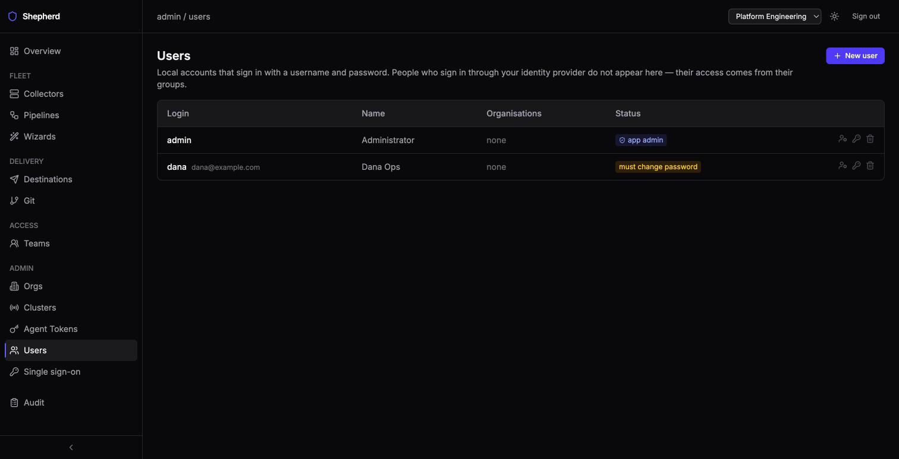
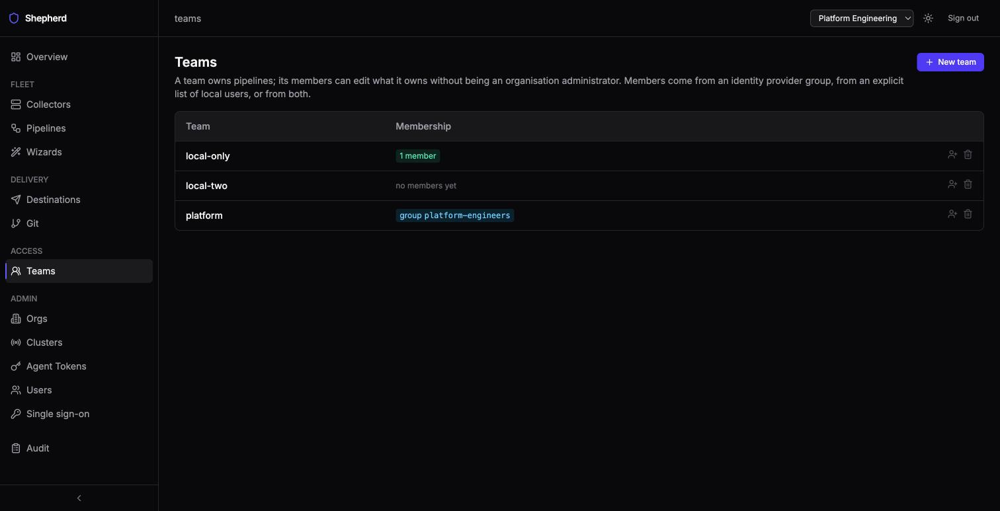

Shepherd runs with no identity provider at all. Local accounts are a supported way to operate it — not an emergency mode — and they coexist with single sign-on rather than being an alternative to it. Configuring SSO does not disable them, and having them does not weaken SSO.
On first boot, while the users table is empty, Shepherd creates one administrator from
SHEPHERD_BOOTSTRAP_ADMIN_LOGIN and SHEPHERD_BOOTSTRAP_ADMIN_PASSWORD.
Set the password and the account is yours. Leave it unset and you get
admin/admin with a forced password change — it can do nothing
at all until the password is changed, so an unattended install cannot sit quietly on a default
credential. Everything after that is managed from the UI.
Admin → Users lists local accounts, their status, and their role in each organisation. People who sign in through your identity provider do not appear here — their access comes from their groups, and Shepherd holds no row for them.
An account carries three states worth reading at a glance:

The last administrator cannot be removed. Demoting, disabling or deleting the only remaining enabled app admin is refused rather than allowed and regretted — there is no way back into an instance that has none.
Editing a user offers its organisations: add one, change the role
(admin, editor, viewer), or remove the membership. An
account with no organisation can sign in and see nothing, so this is part of creating a usable
account rather than a later administrative step. What each role may do is in
Roles and access.
A pipeline with no owning team can be edited only by an organisation administrator or editor. Give it an owning team and that team’s members can edit it too, with no wider access at all — that is the whole point of a team: a scoped write for people who are otherwise viewers.
A team draws its members from an identity provider group, from an explicit list of local users, or from both — membership is the union, and the Teams page shows which sources a team uses. A team may have no group at all, which is how teams work in a deployment with no identity provider.

A group-backed team shows no roster, on purpose. That membership exists only as a claim inside a signed token, so there is no list for Shepherd to read — the honest answer is the group’s name, which is what the page shows. Rendering an empty list beside a configured group would read as “this group has nobody in it”.
Nothing has to be turned on. Do not set oidc.issuer, set a bootstrap admin
password, and create the accounts you need at Admin → Users. Sign-in is
a username and password; sessions, roles, teams, audit and everything else behave exactly as
they do with SSO.